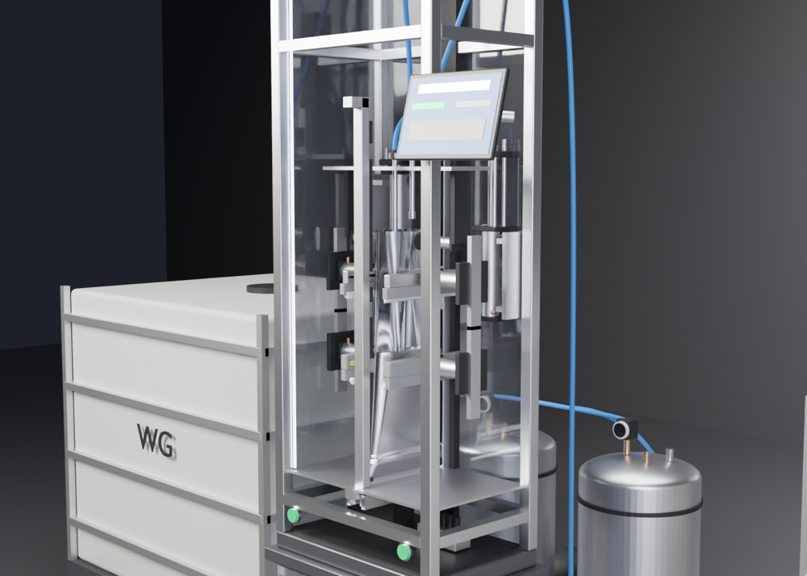
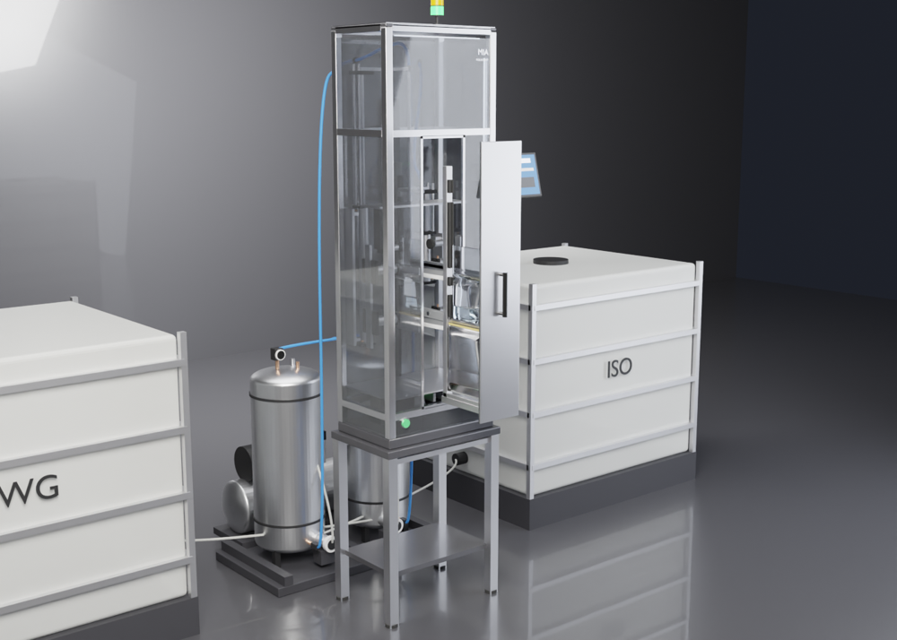
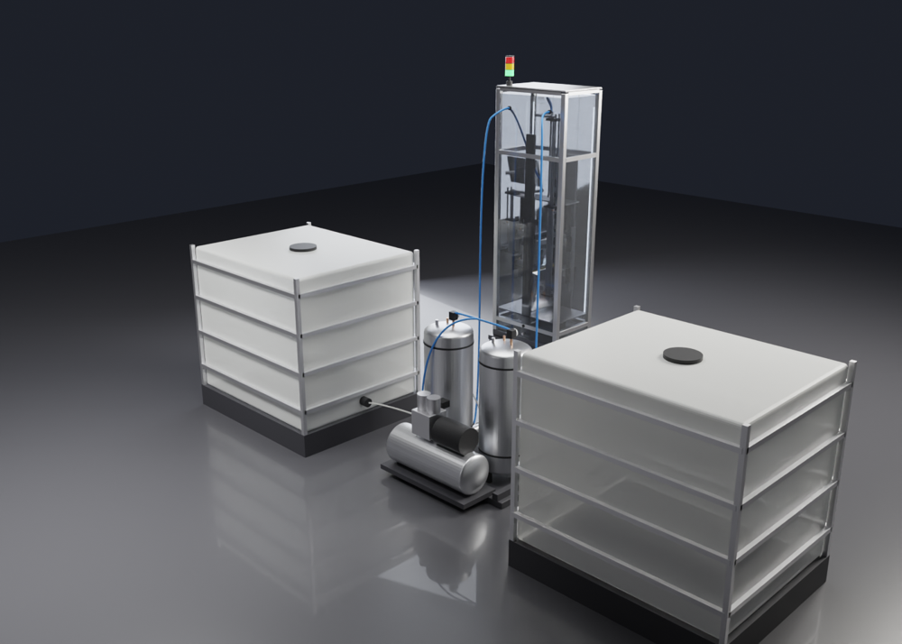

Burst pouch töltő–klipszelő–hegesztő berendezés, kilencven fokkal elforgatva, fiókos betöltéssel. Félig új, mert az újat nem lehetett volna befejezni egy hét alatt.
Válaszd ki a kiszerelést, és nézd végig a ciklust.
Tizenhét lépés, egyetlen operátori mozdulat.
| 1. Előkészítés | Az operátor kihúzza a fiókot, a két U-profilba csúsztatja az egymásba helyezett alu és PE tasakot a két szilikagél párnával, oldalról beteszi a két klipszdarabot a klipsztartókba, és betolja a fiókot. |
|---|---|
| 2. Nyitás | Két Ø40 vákuumkorong rácuppan a PE zacskó tetejére és 1–2°-ban széthúzza: középen Ø90-es henger nyílik, a szélek beljebb húzódnak. |
| 3. Izocianát | A bal oldali vezetett munkahenger (475 mm löket) leereszti a 12×8-as fém töltőcsövet a klipszvonal alá; 1,5 baros nyomástartó edényből, visszacsapó szelepen át tölt. |
| 4. Klipszelés | Két munkahenger (3+3 kN) összetolja a C és a fektetett nyolcas klipszet, alattuk a fehér D-simítók laposra simítják a fóliát. A klipsz térelválasztóként a tasakon marad. |
| 5. Vízüveg | A jobb oldali henger (140 mm löket) a hegesztési vonal alá ereszti a második csövet, és tölt. |
| 6. Hegesztés | Fűtőszálas pofa és ellendarab 5 mm-es sávon hegeszt, simítókkal. A vákuum elenged, a lezárt tasak megtartja az alakját. |
| 7. Kivétel | A fiók kihúzható, a kész termék kiemelhető. Következő generáció: automata klipszadagolás. |

Fém csövek, vezetett hengerek, 12-es pneumatikacső közvetlenül a csövek tetején.

Kétoldali teleszkópos sín, fekete fogantyú mellmagasságban, 700 mm-es állvány.

2 × 50 l tartály nyomáskapcsolóval, 6 baros kompresszor, 2 IBC, perisztaltikus szivattyúk.
| Ház | 515 × 340 × 1542 mm, alumínium profilkeret, füstszürke üvegpanelek, 700 mm-es állványon |
|---|---|
| Kiszerelések | 330 ml, 500 ml, 670 ml, 750 ml (kicsi zacskó) · 1 l, 1,5 l, 1,8 l, 2,25 l (nagy zacskó) |
| Tasak | PE 550×180 / 800×180 mm (20–50 µm) · alu 285×220 / 450×220 mm |
| Klipsz / hegesztés | kicsi: 255 / +192 mm · nagy: 380 / +345 mm a tasak aljától |
| Töltés | Keyence átfolyásmérő, ±2 % (megengedett 4,5 %), térfogatra szabályozva |
| Pneumatika | 6 bar hálózat, 1,5 bar töltőnyomás, 12 mm PE csövek |
| Kezelés | Tablet karon, kétkezes zöld indítás, háromszínű jelzőlámpa |
Így dolgozik vele egy operátor – és ennyivel jobb, mint a Manyika 1.
A 3D modell, a modellt felépítő Python kód, a forráskód és a munkanapló.
MIA, Manyika 2 · bármilyen 3D nézegetőben megnyitható · 3,2 MB
MIA_model_v2.step tömörítve · CAD programokba (Fusion, SolidWorks, Inventor) · 5,2 MB
A teljes jelenet anyagokkal, Blender 5.x · 0,5 MB
Parametrikus Blender Python szkript, ebből készül minden render és a videó
github.com/luihalasz/mia_ai_kihivas · a teljes forráskód
Hogyan készült Claude-dal · eszközök, promptok, elakadások
Ugyanez a napló böngészőben olvasva